Caso 019 · EMBT (Miralles; Tagliabue) · 2005 · mercado (rehabilitación)
Una plaza con techo: un cinturón de piedra y hormigón que pesa y comprime la entrada, y un único plano horizontal de acero, a 10,50 m, que da sombra a una sala hipóstila de 60 x 42 m y se abre en un pozo-plaza hundido donde el sol de verano marca el mediodía. Sintetiza el lugar (sol de 72° en verano y 25° en invierno, calles de 8 m con vecinos de unos 18 m, fachadas de 1848 en dos frentes), el programa (los servicios, la carga y el subsuelo en la masa; una sala libre para el producto fresco), la composición (masa frente a plano, simetría descentrada con un pozo desplazado 6 m del centro) y la construcción (piedra conservada y hormigón abajo; acero y luz arriba).
Estereotómico: sótanos (losas de 0,5-0,6 m, muros de 0,6-0,9 m), cinturón (paramento de piedra de 0,90 m en SE y NO, muros nuevos de 0,60 m en SO y NE, masa interior y forjado de 0,75 m) y viviendas (muros de carga cada 6 m). Tectónico: el plano (acero, canto 1,00 m, vuelo de 3 m) sobre pilares circulares de acero Ø 0,24 m en retícula de 12 x 6 m (ejes 1-6 y A-H), que continúan hacia abajo en pilares de hormigón de 0,40 m en S1 y S2. El plano es el techo de la sala; sobre él no sobresale nada. Núcleos verticales: cuatro en el cinturón (K1 y K2 con ascensor y escalera al P1; K3 y K4 con escaleras a S1), el ascensor y la escalera del pozo, un montacargas (S1-P1) y dos núcleos de viviendas con ascensor (S2-V4). El aparcamiento tiene además dos escaleras de evacuación propias (oeste y centro). Sistema proporcional: módulo de 6 m. Sala 10 x 7 módulos, pozo 4 x 3, cinturón de 1 módulo, alturas múltiplos de 3,0 (0, 3, 6, 9) y 10,50 = 3,5 x 3. Está acotado en las plantas (ejes) y en S01 (alturas).
| Espacio | Luz | Cantidad y defensa |
|---|---|---|
| Sala del mercado (2.100 m²) | difusa, vertical por cinco lucernarios corridos de 1,2 m (opalinos, 293 m², 14 % del suelo) enrasados en el plano; difusa, horizontal por la franja perimetral de 1,5 m (+9,00 a +10,50) | ningún punto a más de 6 m de un lucernario o del pozo; la franja queda en sombra del vuelo (a 72°, 9,2 m de sombra para 3 m de vuelo) |
| Pozo y plaza hundida (415 m²) | sólida, vertical, de arriba | verano: 79 % de la cuerda de la diagonal al sol al mediodía; equinoccio 43 %; invierno 0 % (lo detienen el vecino de 18 m y el plano). Árboles de hoja caduca |
| Supermercado (≈ 1.220 m²) | difusa, horizontal, por el vidrio hacia la plaza | bajo la losa de la sala, sin sol directo |
| Restaurante y cafetería (P1) | horizontal, sólida, por ventanas de 2,4-3 m (alfeizar 0,90) | defendidas por el vuelo de 3 m y el espesor del paramento |
| Viviendas | horizontal, por una fachada (al pasaje o a Colomines), 7,2 m de fondo | calles estrechas: luz difusa, sin sol de invierno en el pasaje |
Es la luz sólida del pozo cruzando una sala de luz difusa (S01 dibuja los rayos de 72,0° y 48,6° y el de 25,2°, detenido).
Medidas decididas por su efecto: 2,25 m (compresión), 10,50 m (dilatación), 4,50 m de pozo y sótano de carga, vuelo de 3,0 m (sombra). Se retiró el mecanismo «línea frente a plano» porque no hay horizonte ni posición que enrase los ojos con el plano.
Piedra de 1848 recuperada en los frentes SE y NO; hormigón visto en la masa nueva (la tierra y la luz de la ciudad); acero mate para el plano y los pilares (lo ligero, lo que se defiende); vidrio opalino en los lucernarios; ladrillo y cal en trasdosados y viviendas. Los materiales del lugar son piedra, ladrillo y cubiertas planas: aquí la cubierta es plana.
| Exigido | Propuesto | Cumple |
|---|---|---|
| Documentos: situación, plantas, secciones, alzados, detalles, espacio público | U01, P01-P08, S01-S02, S03-S04, D01, U02, V01-V02 | sí |
| Mercado 3.000-5.000 m², menos puestos que los actuales | ≈ 3.200 m², 51 puestos | sí (en el extremo bajo: la sala sirve también de plaza cubierta) |
| Supermercado 700-1.300 m² | ≈ 1.220 m² | sí |
| Restaurante y cafetería 300-700 m² | ≈ 395 m² | sí |
| Carga, almacenes y residuos 1.200-2.200 m² | ≈ 2.150 m² (muelle, cámaras, almacenes, residuos) | sí |
| Viviendas para mayores 2.500-4.500 m² | 56 viviendas, ≈ 4.140 m² útiles con pasillos, núcleos y comunes | sí |
| Aparcamiento 190-310 plazas + 15-20 comerciales | 191 públicas (8 accesibles) + 17 comerciales | sí, en el límite inferior |
| Superficie sobre rasante 9.000-15.000 m² | ≈ 9.700 m² | sí |
| DB-SI: sector comercial ≤ 2.500 m²; viviendas y aparcamiento en sectores propios; los núcleos de viviendas sirven al aparcamiento solo a través de un vestíbulo de independencia (puertas EI 60 y ventilación) | sala 2.100 m², supermercado 1.220 m², aparcamiento y viviendas aparte | sí |
| DB-SI: recorrido de evacuación ≤ 50 m | sala: portal a ≤ 30 m; aparcamiento S2: escaleras oeste, centro y de viviendas, a ≤ 45 m desde cualquier plaza; S1: pozo, núcleos K3-K4 y viviendas | sí |
| DB-SUA 1: barandillas ≥ 1,10 m | 1,10 m en el pozo, escaleras, huecos, rampa entre sótanos y trinchera de acceso | sí |
| DB-SUA 9: itinerarios y rampas accesibles (10/8/6 %, ancho ≥ 1,20 m) | itinerario por ascensores y a nivel; no hay rampa peatonal; la rampa del 16 % es solo de vehículos | sí |
| DB-HE zona C2 | masa térmica, aislante en fachadas y cubiertas, captadores solares en la cubierta de las viviendas para el agua caliente | sí (sin cálculo de demanda: fuera de anteproyecto) |
| Urbanística: no consta | manzana supuesta; alturas de 15 m (viviendas) y 11,50 m (plano) similares a los vecinos | no verificable |
Se conserva el paramento de piedra de 1848 (0,90 m) en los lados SE y NO, donde las calles estrechas guardan el frente; en SO y NE el muro es nuevo (la av. Cambó es posterior y el borde de Colomines estaba deteriorado). El subsuelo y las posibles ruinas del convento no constan: se prevé control arqueológico antes de excavar.
Plano de acero: vigas de 12 m y canto 1,00 m (luz/12), vuelo de 3 m. Pilares CHS Ø 244 x 10 mm en acero S355, unos 300 kN cada uno (retícula de 72 m² por pilar), con longitud de pandeo de 10,5 m: capacidad ≈ 360 kN, ajustada; el plano los arriostra. Forjados: losa PB de 0,60 m, losa P1 de 0,75 m en el cinturón, forjados de viviendas de 0,30 m, sobre pilares de hormigón de 0,40 m en retícula de 12 x 6 m. Losa de cimentación de 0,50 m. Muros de sótano de hormigón de 0,60-0,90 m. Las viviendas se apoyan en muros transversales cada 6 m sobre la losa PB, que apea en pilares de S1 y S2 (transferencia declarada). Las viviendas y el mercado son cuerpos separados por el pasaje de 6 m. Cargas: plano 3 kN/m² más nieve nula y uso de mantenimiento 1 kN/m²; sobrecarga de uso: mercado 5 kN/m², viviendas 2 kN/m², aparcamiento 2 kN/m².
| Elemento | Material / acabado |
|---|---|
| Paramento SE y NO | piedra de 1848 (existente) |
| Muros SO y NE, núcleos y muros de sótano | hormigón armado visto |
| Plano de sombra | acero (chapa mate), canto 1,00 m |
| Lucernarios | vidrio opalino con control solar |
| Franja alta y vidrios de la plaza | vidrio con paños practicables de 3 m cada 6 m |
| Particiones | tabique de bloque de 0,10 m, enlucido |
| Cubierta del cinturón y de las viviendas | hormigón con grava y aislante; captadores solares de metal |
| Rampa de acceso y rampa entre sótanos | hormigón |
| Pavimentos | losa de hormigón (sótanos, almacenes), baldosa (aseos, núcleos), tarima (restaurante, viviendas) |
Los baños de las viviendas, interiores, se ventilan por extracción mecánica; el trazado de los conductos verticales se resuelve en el proyecto de ejecución (límite declarado: no está modelado). Las salas de instalaciones (PB y P1, en el cinturón) alojan climatización, electricidad y comunicaciones. Ventilación natural cruzada en verano por los paños practicables de la franja alta y extracción por el pozo y los lucernarios. Agua caliente por los captadores solares de la cubierta de las viviendas. Cinco ascensores y un montacargas. Los residuos se compactan en el almacén de residuos (PB) y salen por el muelle de S1. La lluvia del pozo (≈ 250 m³ al año) cae sobre la plaza hundida, cuyo pavimento de piedra con pendiente del 1 % hacia el perímetro la lleva al saneamiento del edificio; la plaza se desocupa y la escalera y el supermercado dan cobijo.
D01, fachada SE del cinturón, de la cimentación a la cubierta)Fachada (de fuera a dentro): piedra de 1848 de 0,60 m, aislante de corcho y cal de 0,12 m, trasdosado de ladrillo de 0,16 m y enlucido de cal de 0,02 m (total 0,90 m). Cubierta: grava de 0,05 m, impermeabilización, aislante de 0,10 m, formación de pendientes de 0,05 m y forjado de hormigón de 0,50 m. Solera: pavimento de piedra de 0,05 m, mortero de 0,04 m, losa de hormigón de 0,60 m, grava de 0,20 m y terreno.
Sombra (plano con vuelo de 3 m), masa térmica (cinturón y sótanos), ventilación cruzada por la franja alta, luz difusa constante en la sala y sol directo solo en el pozo. En invierno el sol bajo no llega al pozo (lo detienen el vecino y el plano): la plaza se usa menos y el supermercado la ve con luz difusa.
Itinerario accesible a nivel desde la acera y la parada hasta los cuatro portales y el pasaje; ascensores K1 y K2 (PB-P1), del pozo (S1-PB), montacargas (S1-P1) y dos de viviendas (S2-V4). Plazas accesibles de 3,60 m cerca de los ascensores de S1 (8 plazas: una por cada 33 y más). Aseos accesibles de círculo de 1,50 m en PB (dos), P1 (dos) y S1. Evacuación de S2 por las escaleras oeste (a S1, por un recorrido señalizado y separado de la zona de camiones, y por K3 a PB), centro (a la plaza hundida, al aire libre, y por la escalera del pozo a PB) y las de viviendas; ocupación de la sala ≈ 1.050 personas (2 m²/pers.), con 46 m de portales y pasaje.
Comparte con la obra original lo que impone el encargo: conservar parte de las fachadas de 1848, menos puestos, carga y residuos fuera de la calle, aparcamiento enterrado y viviendas en Colomines. Se aparta de ella en lo que decidió su arquitecto: una cubierta ondulada de cerámica de colores, estructura de arcos de madera y lenguaje orgánico. Aquí el techo es un plano horizontal único, la piedra es mate y se conserva en dos lados, y la sala es hipóstila de acero. Desde la teoría: un plano horizontal separa lo estereotómico de lo tectónico y la luz se mide con la geometría solar real, no se dibuja como efecto. No se reproduce ninguna obra de Campo Baeza: el pozo está desplazado, hundido, y abre un supermercado, y la sala se ilumina por el perímetro y por cinco bandas.
La parcela, el subsuelo, el planeamiento y la sombra real de los vecinos son supuestos.
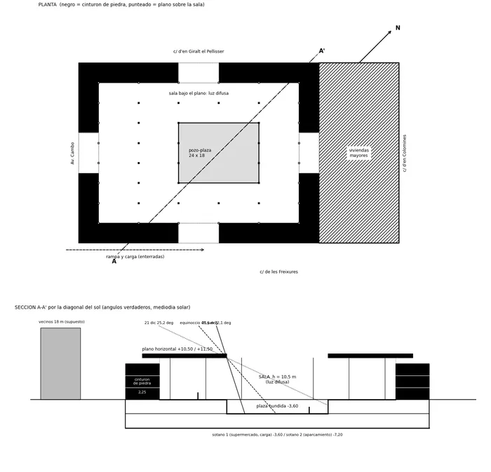
C1 · Croquis 1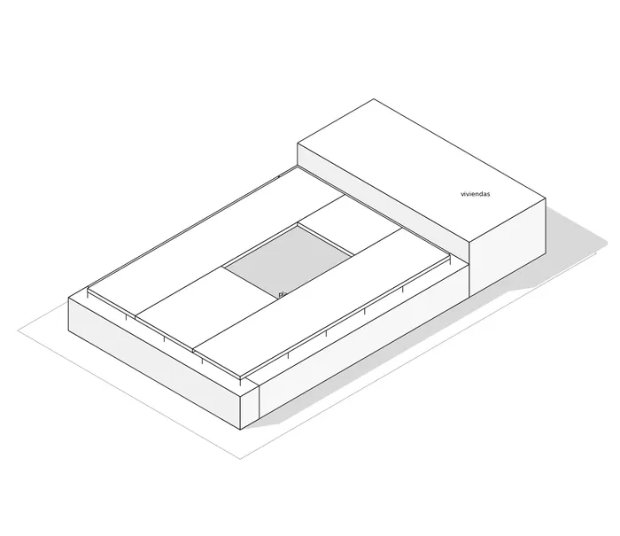
C2 · Croquis 2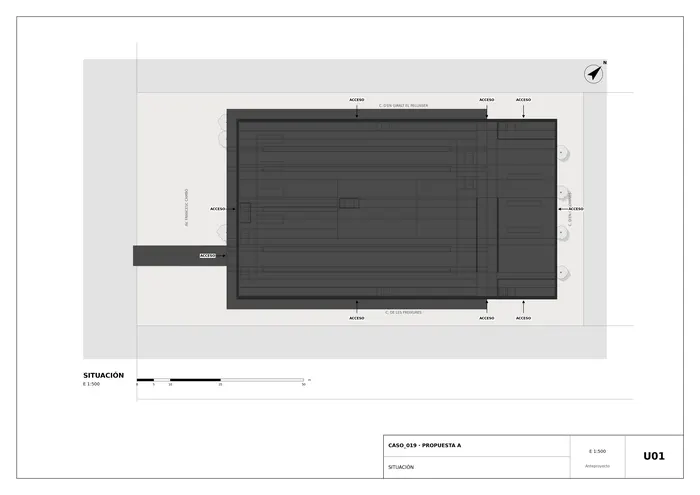
U01 · Situación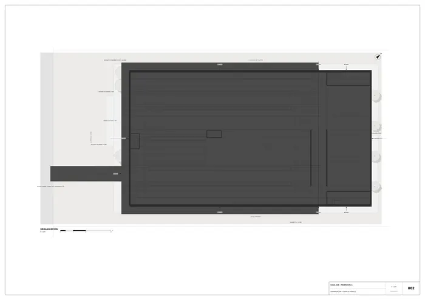
U02 · Urbanización y espacio público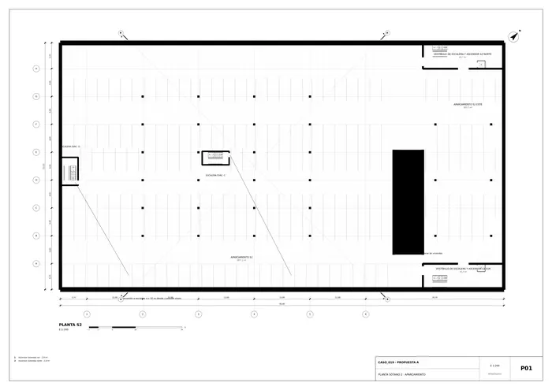
P01 · Planta sótano 2 · aparcamiento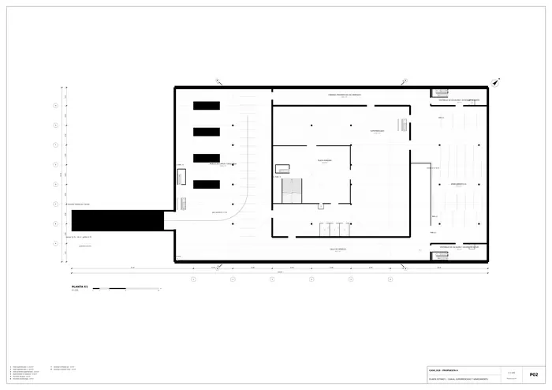
P02 · Planta sótano 1 · carga, supermercado y aparcamiento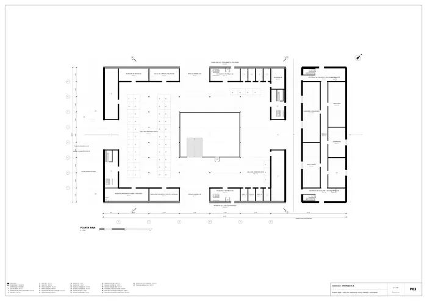
P03 · Planta baja · sala del mercado, pozo, pasaje y viviendas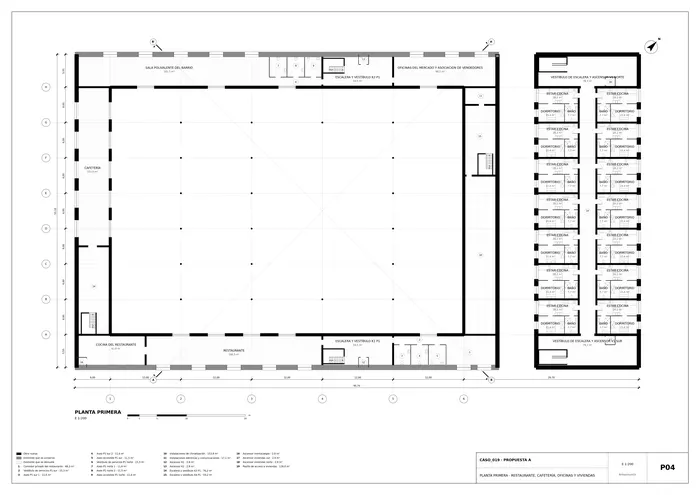
P04 · Planta primera · restaurante, cafetería, oficinas y viviendas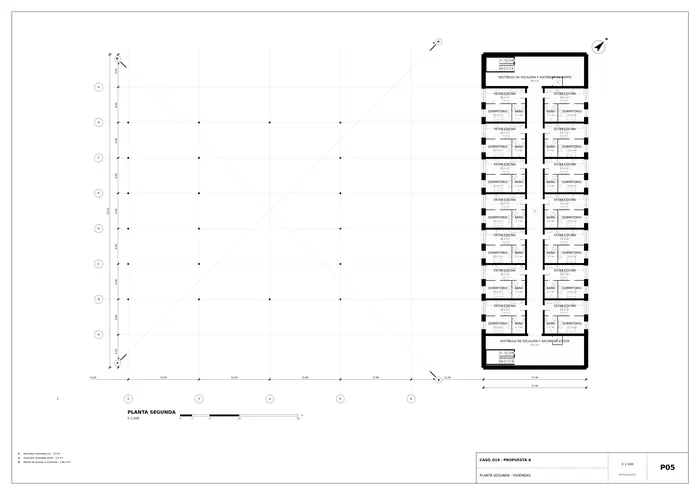
P05 · Planta segunda · viviendas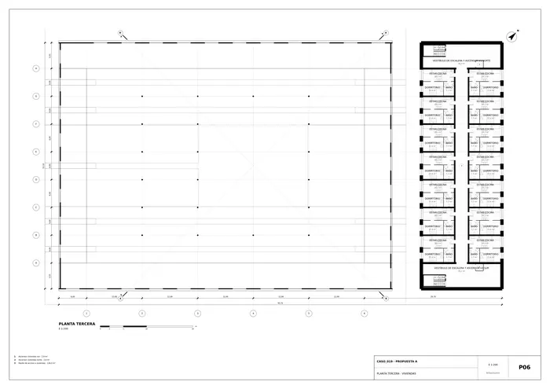
P06 · Planta tercera · viviendas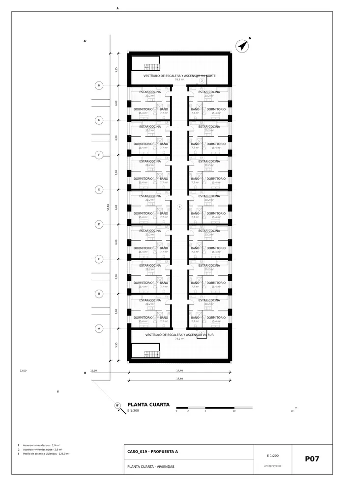
P07 · Planta cuarta viviendas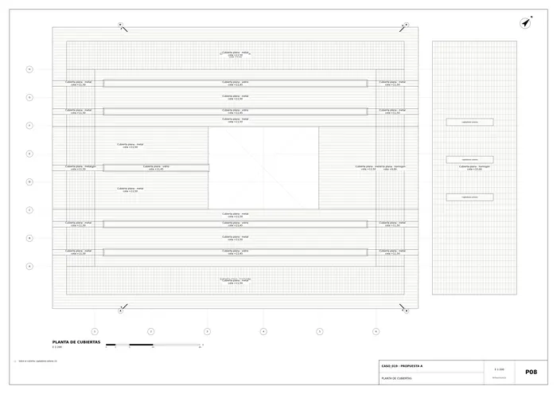
P08 · Planta de cubiertas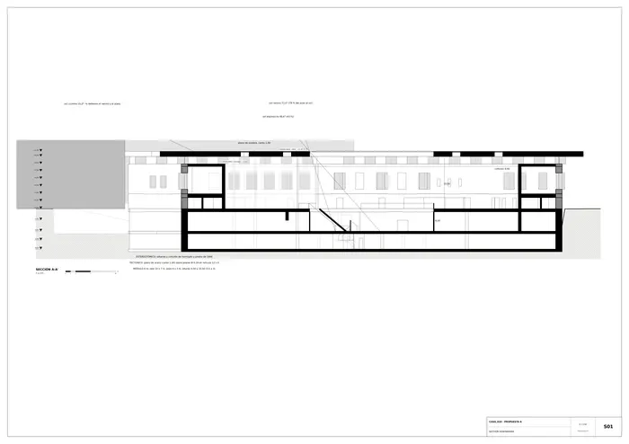
S01 · Sección generadora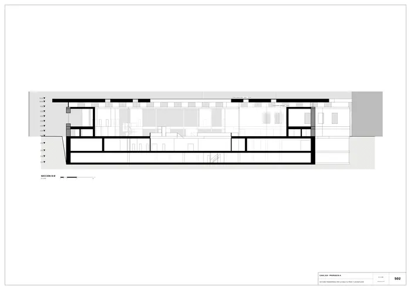
S02 · Sección transversal por la sala, el pozo y los núcleos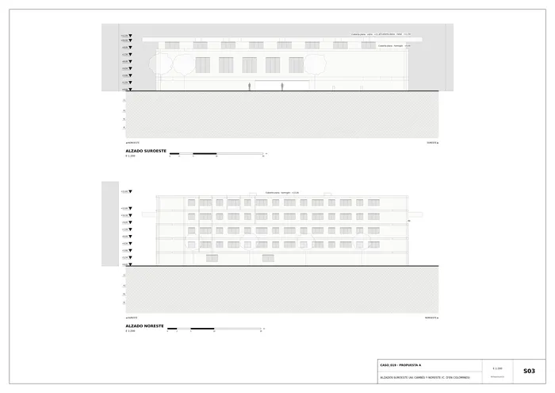
S03 · Alzados suroeste (Av. Cambó) y noreste (C. d'en Colomines)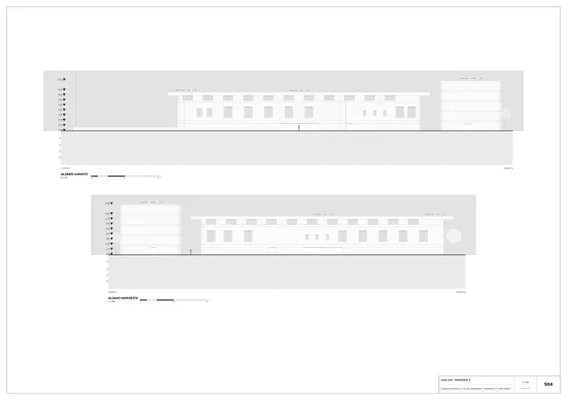
S04 · Alzados sureste (C. de les Freixures) y noroeste (C. d'en Giralt)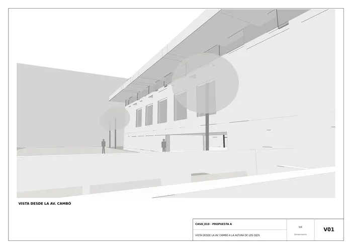
V01 · Vista desde la Av. Cambó a la altura de los ojos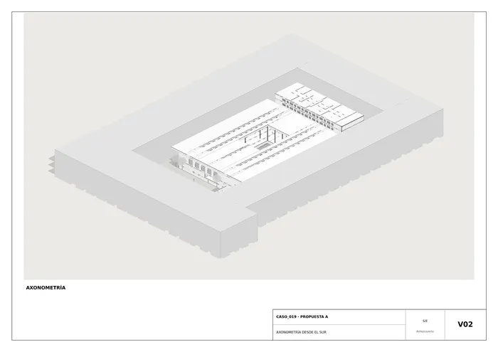
V02 · Axonometría desde el sur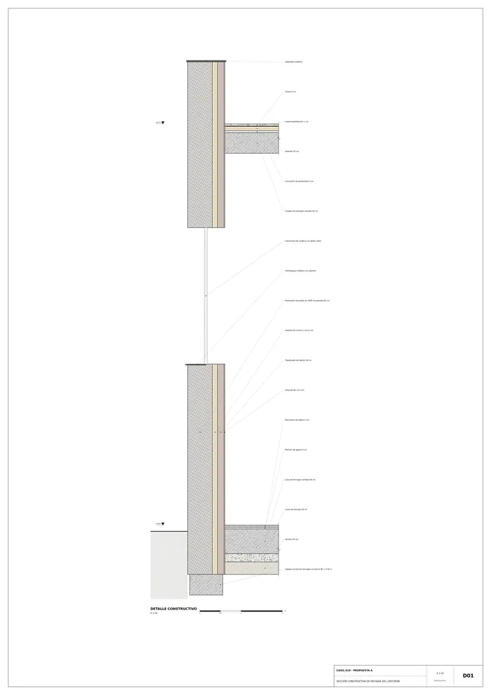
D01 · Sección constructiva de fachada del cinturónMemoria de la propuesta tal como la entregó el sistema. Se han omitido las notas internas del proceso (revisiones, control de reconocimiento y referencias a archivos de trabajo).